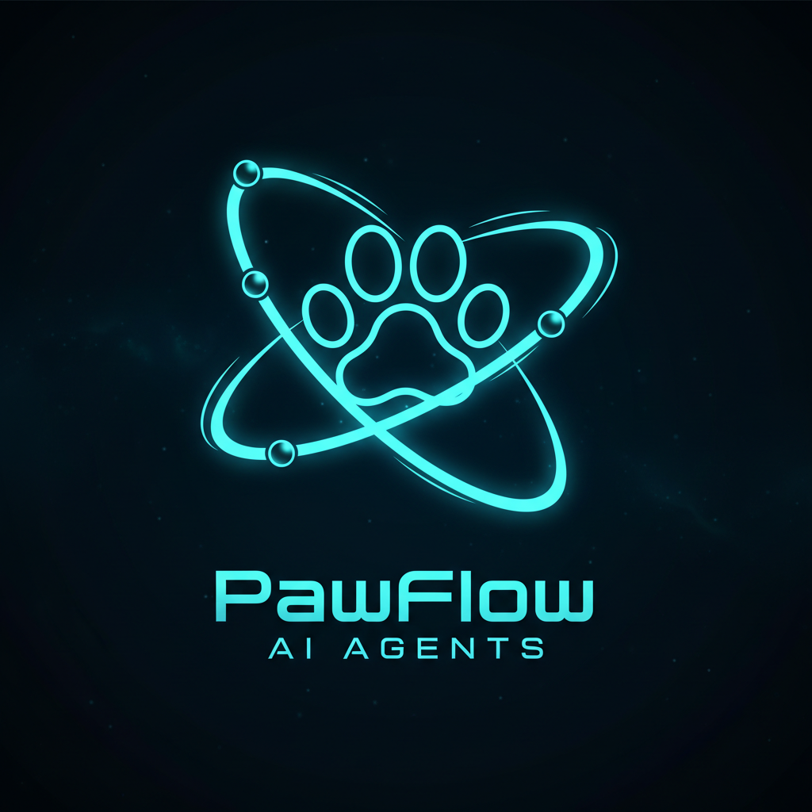
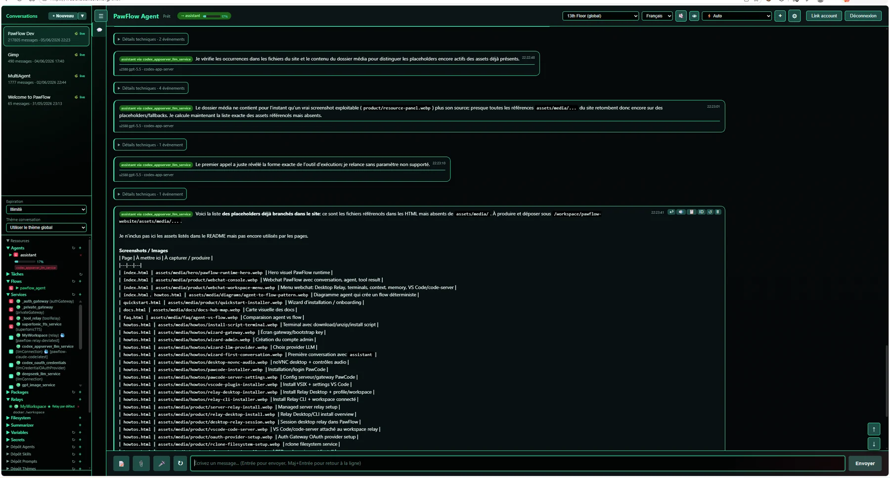
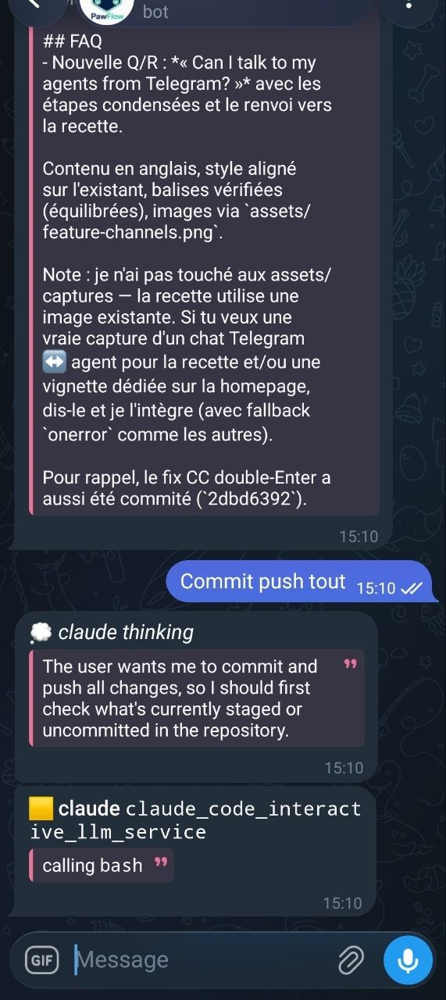
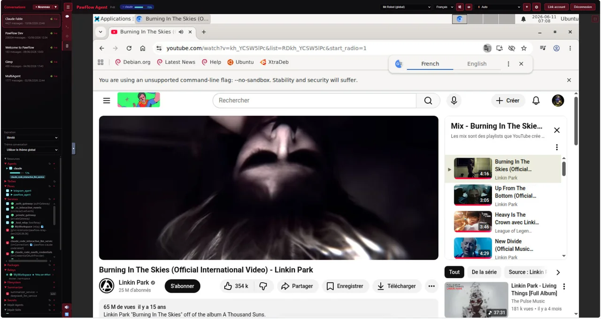
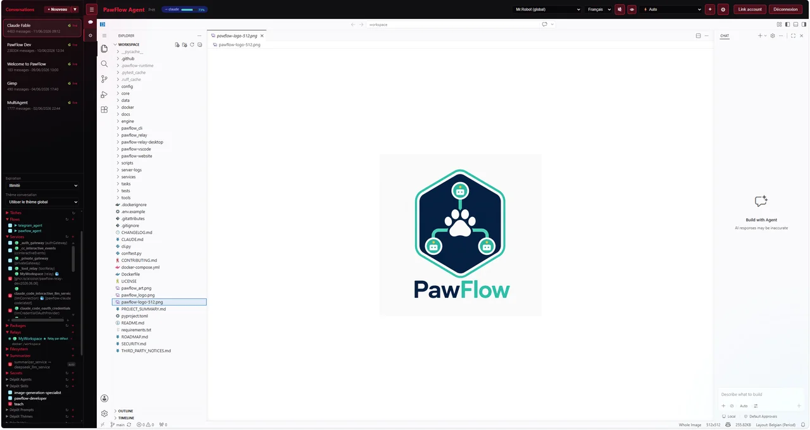
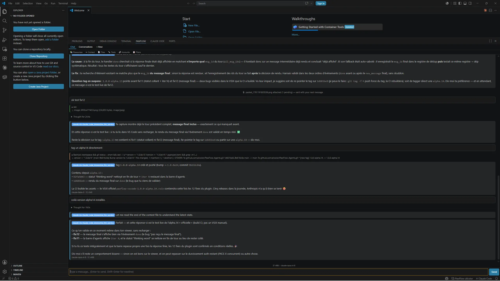
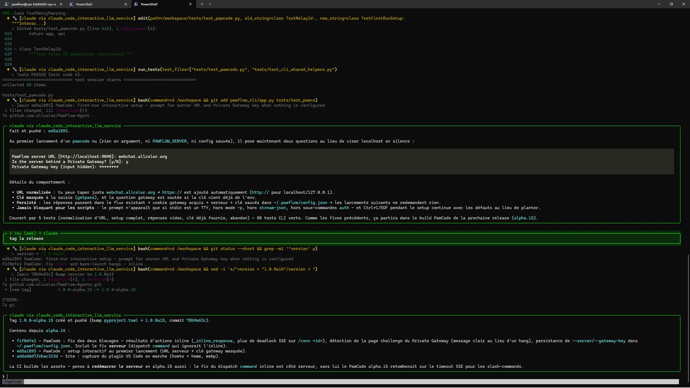
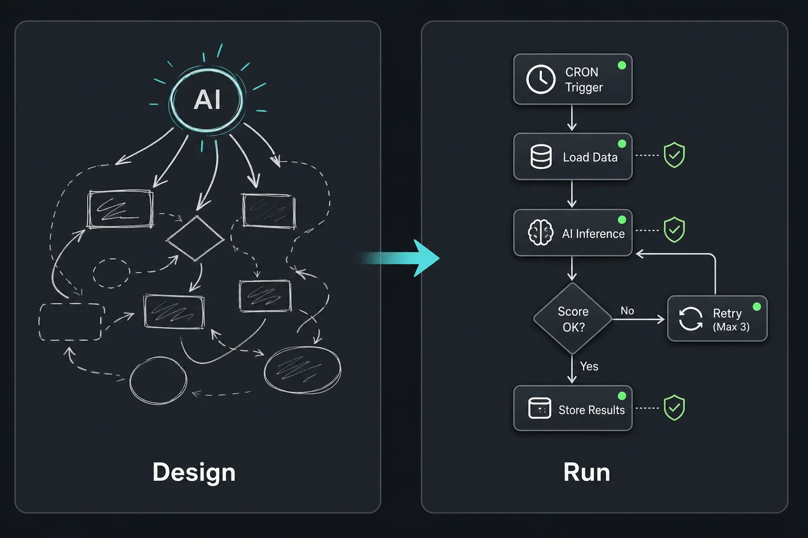

Desktop access
Screen, browser, VNC, and full desktop tools let agents operate real UI workflows when APIs are not enough.

PawFlowOpen source. Self-hosted. Built for real work.
Run durable AI agents against your own files, tools, browsers, desktops, services, and workflows without moving the runtime into a vendor-controlled agent cloud.
Loading current release command...Why PawFlow
PawFlow keeps the orchestration layer under your control. The server coordinates agents and conversations; relays execute tools next to the workspace; flows run repeatable work with explicit structure.

Architecture
PawFlow does not need permanent direct access to every machine. It routes work through connected relays and explicit services.
Use agents for exploration, coding, decisions, and maintenance. When work becomes repeatable, turn it into a flow: CRON triggers, task DAGs, backpressure, checkpoints, retries, and explicit LLM calls only where modeled.
View the daily digest pattern
Webchat workspace
A linked relay is not only file access. From the webchat, operators can open desktop sessions, terminals, VS Code/code-server, context editors, memory editors, and provider runtime views while the agent works.
What you can do
Run coding agents against a linked workspace with relay-backed read, edit, shell, grep, browser, and project graph tools.
Delegate tasks, assign plans, verify outputs, and run different providers in the same conversation.
Most agent stacks silently drop images sent to a text-only model. PawFlow delegates them to a separate vision LLM that returns text, layout, states, and UI pixel coordinates — so any reasoning model, including free-tier ones, can see uploads and operate a desktop.
Operate controlled desktops, browsers, VNC sessions, and forwarded local services from the same runtime.
Generate and transform images, video, audio, voice, 3D assets, try-on outputs, and upscaled media into FileStore.
Run NiFi-style JSON flows with 100+ task types across IO, data, control, system, and AI categories.
Use explicit relays, stored secrets, provider boundaries, private gateways, and per-agent permissions.
First-class Telegram
Telegram is a complete, supported client for the same agent runtime as web chat and PawCode — not a webhook bolt-on. Message a bot and reach the same durable conversations, agents, and tools, with live thinking and tool events streamed back into the chat.

Voice in, voice out
Hold a live spoken conversation with an agent: continuous speech-to-speech over OpenAI Realtime or Gemini Live, with live captions, barge-in, spoken tool use, and transcripts saved as normal conversation history — voice-native agents even answer Telegram voice notes in their own voice. Classic speech-to-text and text-to-speech remain first-class too: dictate from the webchat microphone, get replies read aloud, run fully self-hosted voices (Supertonic, Voicebox, LuxTTS) or any OpenAI-compatible endpoint.
Built-in cloud desktop
Every desktop-capable relay — including the server relay built into PawFlow itself — ships a full Linux virtual desktop. Open it as a noVNC tab from the webchat workspace menu, stream its audio, and keep working: no extra VM, no third-party remote-desktop service, everything stays on your infrastructure. Text-only agents can delegate screenshots to a separate vision LLM, then reason over its UI description and coordinates.
screen and see tools, with approved clicks, typing, and shell.
Private Gateway
Internet-facing routes sit behind an explicit gateway step with rate limits, cooldowns, and bans. Sign in with Google, GitHub, X.com, Telegram, Microsoft, Facebook, Amazon, or built-in PawFlow accounts — and disguise the gateway itself with themed skins (Matrix, Netflix, Blade Runner, terminal, wifi portal…) so the login page looks like anything but an agent platform.
Make it yours
Pick a theme for the entire webchat or give each conversation its own look. Themes are plain resources — a theme.json plus CSS and assets — so you can create, import, and share them through PFP packages and resource depots without touching product code.

Built-in IDE
Every relay workspace ships code-server: type /code or pick VS Code from the webchat workspace menu and a complete browser IDE opens on the exact files your agents are working on. Review diffs, search, and edit by hand — no local install, nothing leaves your infrastructure.

VS Code extension
Install the release .vsix and PawFlow becomes a panel inside your own VS Code: the same durable conversations, agents, files, and tools as web chat — with live thinking, streaming responses, and tool events right next to your code.

PawCode CLI
PawCode is a Claude Code-style terminal client for the shared runtime: login once, resume the same durable conversations, and watch thinking, tool calls, and streaming responses render live in the shell — no browser required.

The practical difference
For recurring jobs, PawFlow lets the agent design or maintain the automation, then the flow engine runs the explicit graph. You decide where LLM calls are allowed and where execution must stay deterministic.
Five-minute path
The Docker installer checks prerequisites, starts PawFlow, opens the bootstrap wizard, creates the admin user, configures the first LLM service, and deploys the starter agent flow.